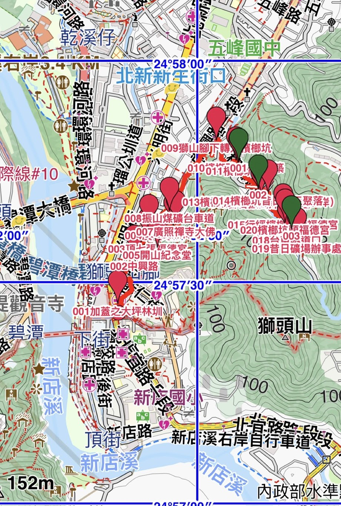
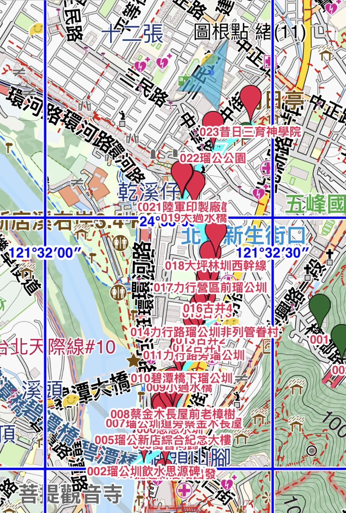
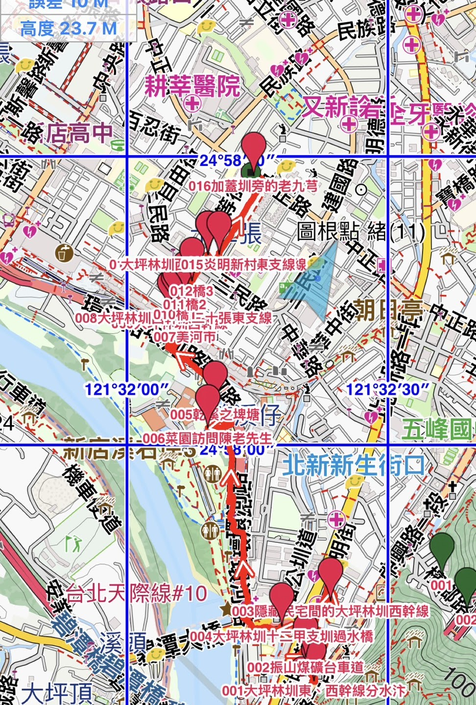
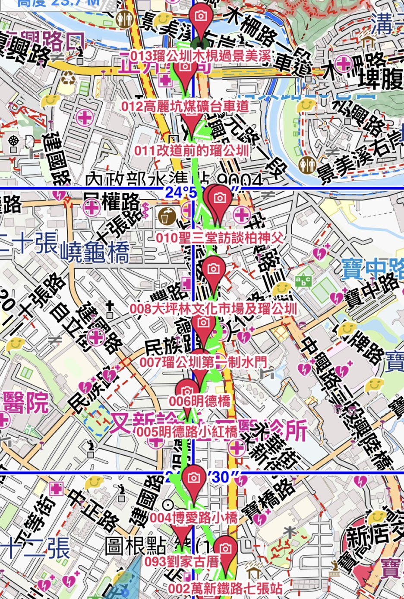

沿著地圖，走進新店
從獅頭山腳沿檳榔路尋訪煤礦遺跡，在瑠公圳邊聽居民說舊日生活。走到十二甲支圳，耆老談田裡如何引水。再經水閘門與市場，到聖三堂聽教友說起彼此照顧的日常。地圖上的每一站，都留著一段停下腳步才聽見的話。
從這裡出發
-

獅頭是火山 天機活潑 淡地第一名山
捷運新店站－大坪林圳－獅頭山腳－檳榔路－振山煤礦－檳榔坑頭福德宮對談分享
在 Google 地圖開啟 -

瑠公圳漫步
捷運新店站－瑠公圳頭－力行營區－圳邊90歲的黃媽媽一起同樂彼此分享圳邊生活點滴
在 Google 地圖開啟 -

圳水川流 孕育大地
新店農會－大坪林圳12甲支圳－環河路－大宅庒－白馬寺、乾溪－在耆老的農田中分享農耕、水圳與生活記憶
在 Google 地圖開啟 -

彼此相顧，激發愛心
北新藝術廣場－瑠公圳－瑠公圳第一水閘門－大坪林市場－聖三堂－與教友們陪伴與照顧對話
在 Google 地圖開啟